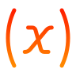

Drop .ssd file to load.
File
New
O
pen
Ctrl O
S
ave
Ctrl S
Save As...
Ctrl Shift S
Import from file...
Export to file...
Models in Browser...
Recently Opened
Recent 0
Recent 1
Recent 2
Recent 3
Recent 4
Recent 5
Recent 6
Recent 7
Recent 8
Recent 9
Clear Recent List
View
Zoom In
Ctrl +
Zoom Out
Ctrl -
Reset Zoom
Help
Getting Started
Keyboard Shortcuts
Functions & Equations
Unit Checking
Preferences
About Systemika
Systemika License
Third-party Notices
Systemika
| Editor lineage:
StochSD
/
InsightMaker.com

Run Name
Time Unit
None
Check Units
Report
Unsaved
Changes
Firefox and Safari are not fully supported: use Chrome or Edge for full file and run management.